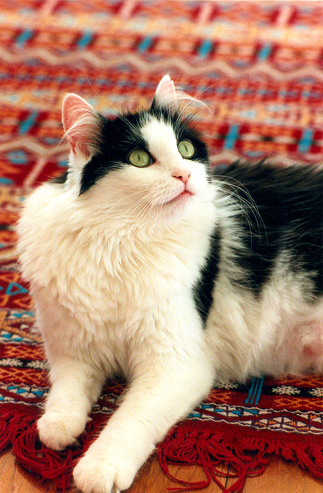

A domestic short-haired cat is a cat of mixed ancestry – thus not belonging to any particular recognized cat breed – possessing a coat of short fur. In British English, they are often referred to as moggies. Domestic short-haired cats should not be confused with the British Shorthair, American Shorthair or other standardized breeds with "Shorthair" names, which are breeds recognised by various registries. Domestic short-haireds are the most common cat in the United States,[1] accounting for around 90–95% of their number.[1][2] Other generic terms include house cat and alley cat (the latter may be used more specifically to refer to feral specimens). The term tabby cat technically refers to a coat pattern, but is also often used as a general term for cats of this sort.
In the cat fancy, and among veterinarians and animal control agencies, domestic short-haired cats may be classified with organisation-specific terminology (often capitalized), such as Domestic Shorthair[2] (DSH), House Cat, Shorthair (HCS),[3][4] or Shorthair Household Pet.[5] Such a pseudo-breed is used for registry as well as shelter/rescue classification purposes. While not bred as show cats, some mixed-breed cats are actually pedigreed and entered into cat shows that have non-purebred "Household Pet" divisions. Show rules vary, and may permit "any eye colour, all coat colours and patterns, any coat length or texture, and any length of tail"[4] (i.e. anything at all, as long as the cat is well-proportioned and healthy) or may be more restrictive (e.g. "All classic colours are permitted. Any amount of white is permitted. The colours chocolate and cinnamon, as well as their dilution (lilac and fawn) are not recognized in any combinations (bicolour, tricolour, tabby). The pointed pattern is also not recognized. The description of colours is listed in the general list of colours"[5]).
Domestic short-haired cats are characterised by a wide range of colouring, and typically "revert to type" after a few generations, which means they express their coats as a tabby cat. This can be any colour or combination of colours. They also exhibit a wide range of physical characteristics and, as a result, domestic short-haired cats in different countries tend to look different in body shape and size, as they are working from differing gene pools. DSH cats in Asia tend to have a build similar to a "classic" Siamese or Tonkinese, while European and American varieties have a thicker, heavier build.[citation needed] Mixed-breed domestic cats have a form of hybrid vigor due to their diverse gene pool, so that they are much less vulnerable to the genetic problems for which purebred cats must be carefully screened.
Since freely-breeding domestic short-haired cats form distinctive landraces in wide geographic areas, they have been the basis of several recent formal breeds such as the European Shorthair a.k.a. Celtic Shorthair, and American Shorthair.
References:
This article uses material from the Wikipedia article ”Domestic short-haired cat", which is released under the Creative Commons Attribution-Share-Alike License 3.0
Picture: By Nancy Wong (Own work) [CC BY-SA 3.0],